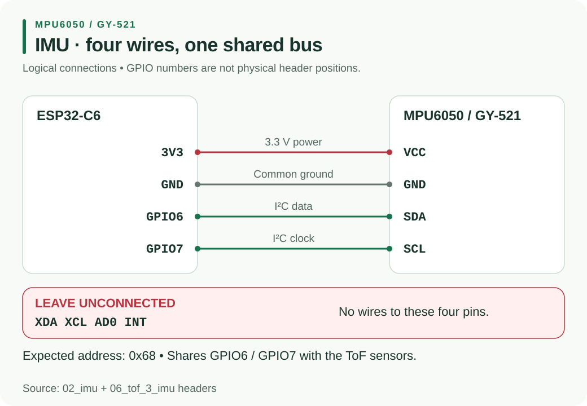

Resource Hub / Hardware / H3
H3 · Motion sensorMPU-6050 / GY-521 IMU
The debug kit tests an MPU-6050 / GY-521 with four wires. Follow the supplied sketch’s wiring and check heading as you rotate the board.
Open the debug checks and full sketches →
01Wiring overview

02Exact wiring
For 02_imu, start with the IMU alone on the I2C pins and power the controller over USB.
| MPU-6050 / GY-521 pin | ESP32-C6 connection |
|---|---|
| VCC | 3V3 |
| GND | GND |
| SDA | GPIO6 |
| SCL | GPIO7 |
| XDA | leave unconnected |
| XCL | leave unconnected |
| AD0 | leave unconnected |
| INT | leave unconnected |
Use SDA/SCL, not XDA/XCL. Leave all four unused pins unconnected. The intended address is 0x68.
03Run the isolated test
Use Arduino-ESP32 3.0.0 or newer, board ESP32C6 Dev Module, USB CDC On Boot: Enabled, and Serial Monitor at 115200 baud. No additional IMU library is needed; the sketch uses Wire directly.
Upload 02_imu, open Serial Monitor and press RESET. Keep the board still for the first second during calibration. Typical startup:
STEP 2: IMU test
idle SDA=1 SCL=1 (both should be 1)
Scan SDA=GPIO6 SCL=GPIO7: 0x68
PASS: MPU at 0x68, chip ID 0x68 (genuine)
Calibrating - keep STILL...
When still, gyroZ should be near zero. A quarter turn changes heading by about +90 degrees one way and -90 the other. When stopped, gyroZ returns near zero while heading remains near the angle reached. A slow creep while still is normal: heading is a relative turn estimate.
04Troubleshooting
| Output or symptom | Action |
|---|---|
chip ID 0x70 (clone - fine) |
accepted by the sketch; continue the movement test |
SDA and SCL are SWAPPED |
power down and restore SDA → GPIO6, SCL → GPIO7 |
MPU at 0x69 because AD0 is HIGH |
disconnect AD0 |
idle SDA=0 SCL=0 |
check missing power, loose wires, shorts to GND and pull-ups |
FAIL: no MPU found either way round. |
check VCC → 3V3, GND, SDA/SCL rather than XDA/XCL, and INT unconnected |
| Heading changes rapidly while still | reset and keep the board still during calibration |
| Blank Serial | enable USB CDC On Boot, re-upload, select 115200 baud and press RESET |
The isolated sketch can find swapped SDA/SCL or address 0x69 and report what to fix. Correct the wiring before combining sensors. i2c_scan should show 0x68 for the normally wired IMU.
05Combined sensors
The IMU shares 3V3, GND, SDA6 and SCL7 with the ToF boards; XDA, XCL, AD0 and INT stay unconnected. 06_tof_3_imu should report left 0x30, front 0x31, right 0x29 and IMU 0x68 all PASS. Keep the robot still for initial calibration.
The combined output includes L/F/R distances, heading and gyroZ. Wave a hand before each sensor and rotate the robot. This step needs VL53L0X by Pololu for ToF only; no IMU library. If a device passed alone and now fails, disconnect the last addition and repeat the earlier test.
06Visualizer
Follow imu_visualizer with the same wiring:
- Upload
imu_visualizer/imu_visualizer.inowith USB CDC enabled. - Close Arduino Serial Monitor so the browser can use the USB port.
- Open
imu_visualizer/index.htmlin Chrome or Edge. - Click Connect board and select the ESP32 COM port.
- Keep the board still for one second, then rotate and tilt it.
The sketch sends 25 IMU, records per second: heading, turn rate, pitch and roll. Lines beginning with # are status messages. The page can send z to zero heading or c to recalibrate; remain still during recalibration. If connection fails, check that Serial Monitor has released the port.
Return to the debug index.